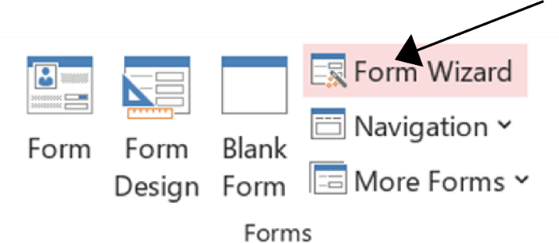
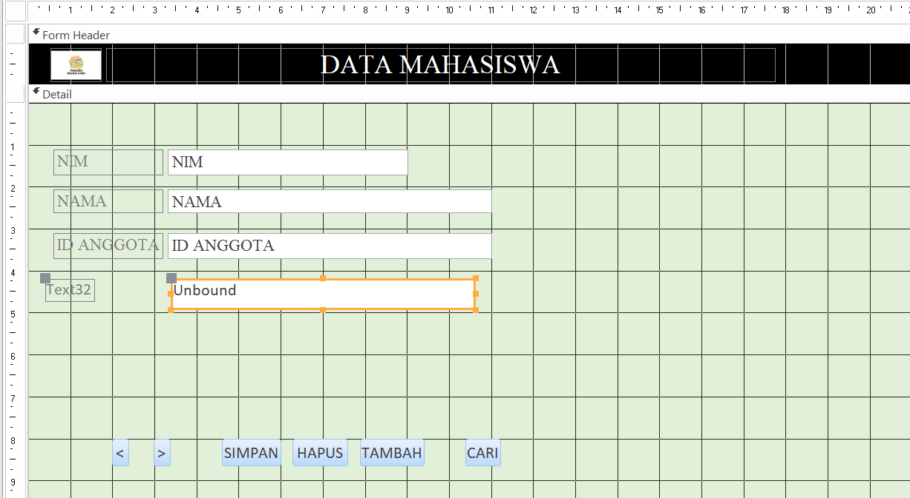
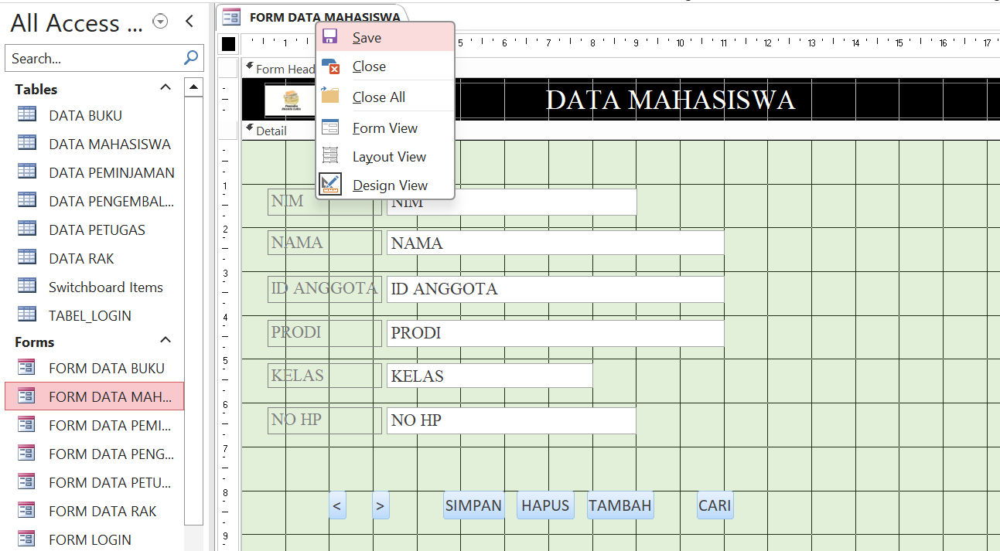
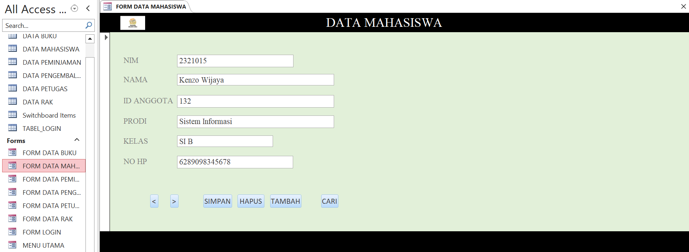

Form di Microsoft Access adalah alat yang digunakan untuk memasukkan, mengedit, dan menampilkan data dalam basis data dengan cara yang lebih user-friendly. Formulir memungkinkan pengguna untuk berinteraksi dengan data tanpa harus berurusan langsung dengan tabel, sehingga lebih mudah untuk mengelola informasi.
Untuk membuat form, klik create pilih form design/ form wizard
- Form di Microsoft Access adalah tampilan data dari tabel yang dirancang khusus untuk memudahkan pengguna dalam memasukkan, mengedit, dan menampilkan data.
- Form Design digunakan untuk merancang dan mendesain tampilan form. Kamu dapat menentukan letak, ukuran, dan format kontrol data, seperti kotak teks, kotak centang, dan tombol, dalam form ini.
- Blank Form adalah form kosong tanpa kontrol data yang memungkinkan kamu untuk menambahkan dan mengatur kontrol data sesuai kebutuhan kamu.
- Form Wizard adalah alat yang membantu kamu membuat form dengan cepat. Kamu tinggal memilih tabel yang ingin kamu tampilkan dalam form, dan Form Wizard akan otomatis membuat form yang sesuai dengan pilihan kamu.
- Navigation digunakan untuk berpindah antar form, laporan, dan tabel dalam database. Fitur ini membantu kamu menavigasi database dengan mudah dan efisien.
- More Forms menampilkan daftar semua form yang telah kamu buat. Kamu dapat memilih form yang ingin kamu buka, edit, atau hapus dari daftar ini.
Isikan sesuai kebutuhan
Simpan form dengan nama yang diinginkan.
Contoh tampilan Form Mahasiswa
